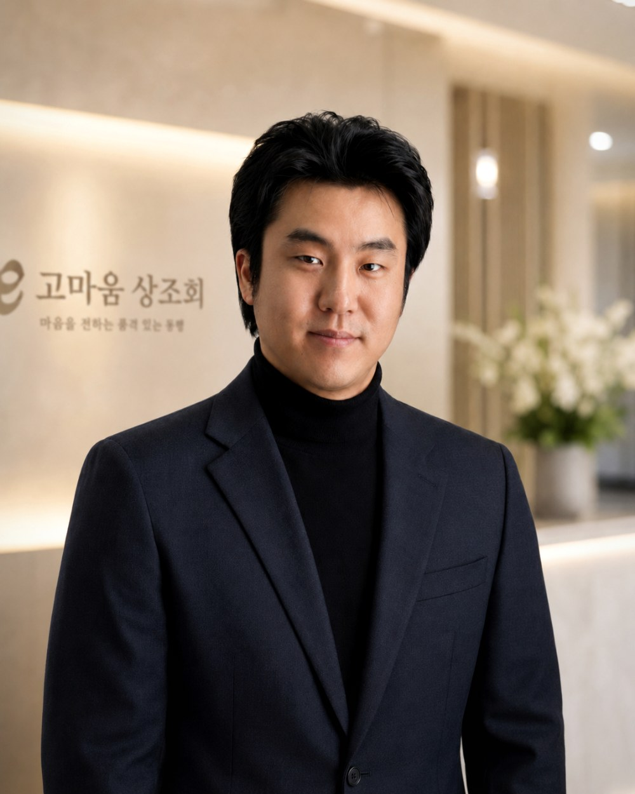

대표의 글
장례가 돈 걱정이 아니라,
고마움으로 남도록.
고마움 상조회를 시작한 이유와, 지키는 것 다섯 가지입니다. 2006년부터 장례 현장에서 일해 온 대표가 처음 만나는 분께 드리는 글입니다.

저는 김병호입니다. 2006년부터 장례 현장에서 일했고, 올해로 스무 해째입니다. 그 시간 끝에 고마움 상조회를 시작했습니다.
이 일을 시작한 이유는 단순합니다. 가까운 사람을 떠나보낸 자리에서, 슬퍼할 겨를도 없이 돈 이야기부터 들어야 했던 가족을 여러 번 보았기 때문입니다. 상조는 원래 이웃이 이웃의 상을 함께 치르던 일이었습니다. 그 뜻이 "미리 돈을 걷는 일"로 바뀐 것이 저는 늘 불편했습니다.
그래서 고마움 상조회는 미리 받지 않습니다. 가입비도, 월납도, 예치금도 없습니다. 장례를 치른 뒤에 쓰신 만큼만, 처음 드린 단가표 그대로 한 번 정산합니다. 이것이 저희의 첫 번째 약속이고, 이 약속이 무너지면 저희는 있을 이유가 없습니다.
두 번째 약속은 장례가 끝난 뒤에 있습니다. 발인이 끝나면 모두가 조용해집니다. 저희는 그때부터 시작합니다. 해마다 기일 전에 먼저 연락드리고, 추모 영상을 보내 드립니다. 돈을 받지 않습니다. 고인을 기억하는 일에 값을 매기고 싶지 않아서입니다.
세 가지는 하지 않겠습니다. 등급을 올리자고 권하지 않겠습니다. 단가표에 없는 항목을 청구하지 않겠습니다. 원치 않으시는 연락을 하지 않겠습니다.
"고마움"이라는 이름은 떠난 분께 드리는 마지막 인사이자, 저희를 믿고 맡겨 주신 가족께 드리는 제 마음입니다.
사랑하는 이와 이별하는 순간,
함께하겠습니다.
우리가 지키는 것
- 미리 받지 않는다.
가입비, 월납, 예치금, 회비. 어떤 이름으로도 받지 않습니다. 장례를 치른 뒤 한 번 정산합니다.
- 먼저 보여 준다.
장례지도사가 출발하기 전에 품목별 단가표가 먼저 갑니다. 거기 없는 항목은 청구하지 않습니다.
- 권하지 않는다.
등급 차이는 말씀드리되, 올리자는 말은 하지 않습니다. 정하는 것은 가족입니다.
- 끝나도 곁에 있는다.
기일 리마인드는 해마다, 전부 무료로. 원치 않으시면 보내지 않습니다.
- 모르면 모른다고 말한다.
정해지지 않은 값과 지역은 정해질 때까지 비워 둡니다. 이 사이트의 빈칸이 그 증거입니다.